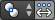
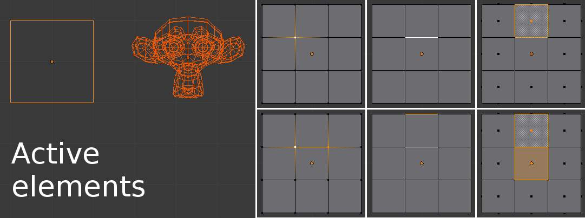
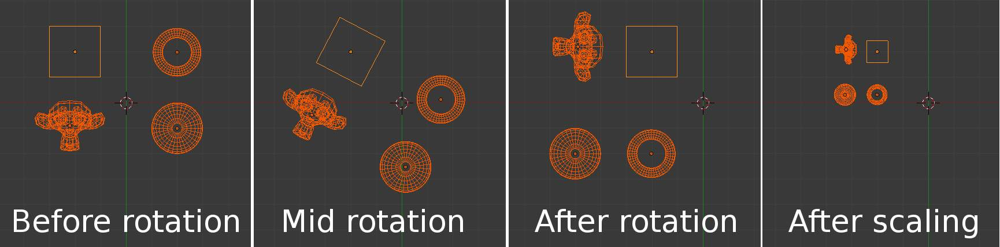
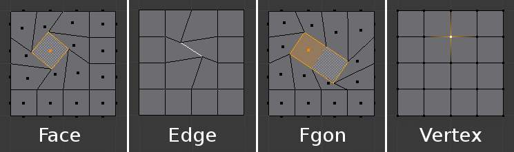
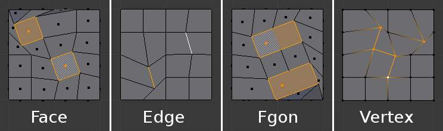

活动元素¶
参考
模式: 物体模式和编辑模式
菜单: 在3D视图标题栏 图标选择.
快捷键:
Alt-.活动 元素可以是一个物体, 顶点, 边或者是一个面. 活动元素是最后选中的元素, 在物体模式将会以浅橘色显示,在 编辑模式以白色显示. 用 活动元素作轴心点 设置为活动元素, 所有产生的变换都将相对于活动元素.

{kind=link}
物体模式活动元素显示在左边的图片中, 活动元素(立方体)为浅橘色. 在编辑模式中的顶点, 边和面活动元素显示在右边的图片中, 为白色.
在物体模式¶
在物体模式中,旋转和缩放围绕活动物体的中心.下面图片演示的是活动元素(立方体)会保持相同的位置(注意它相对3D游标的位置)当其他物体相对活动元素进行旋转和缩放时.

{kind=link}
以立方体为活动元素进行旋转和缩放.
在编辑模式¶
在编辑模式中使用活动元素作为轴心点似乎有点复杂但是所有可能的变换都遵循一些规则:
- 轴心点总是在活动元素的中心.
- 选中元素顶点变换可引发其他变换.如果一个未选中元素与一个选中元素共享一个或者多个顶点未选中元素也将跟随发生一定程度的变换.
让我们检查以下例子: 我们会理解在不用情况下两种规则的应用.
单选¶
当单一元素被选中时它就会自动变为活动元素. 在下图中,你会看到当活动元素移动变换它的顶点时, 结果与活动元素毗连 的共享一个或多个顶点的元素也将会发生变换.

{kind=link}
编辑模式且仅有一个元素被选中.
让我们回顾以下每种情况:
- 面 拥有它们的轴心点在它们选择的圆点出现的位置, 也就是它们顶点的中心.
- 边 拥有它们的轴心点在它们的中心,因为边的中心一直就是.
- 一个单独的顶点 没有任何维度因此它不能演示任何变换(除了移动, 不受轴心点影响).
多选¶
When multiple elements are selected they all transform. The 轴心点s stay in the same place as what we have seen above, with only one exception for Fgons. In the image below, the selected elements have been rotated.

{kind=link}
编辑模式且多选.
- For Faces the transformation occurs around the selection dot of the active face.
- Edges also keep the same behavior with their 轴心点 at their median.
- Fgons behave exactly like faces.
- There is a case for Vertices this time: the active Vertex is where the 轴心点 resides. All other vertices are transformed relative to it.